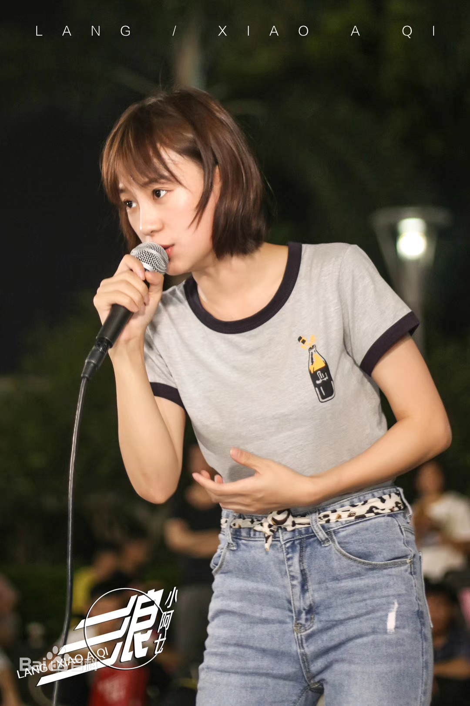
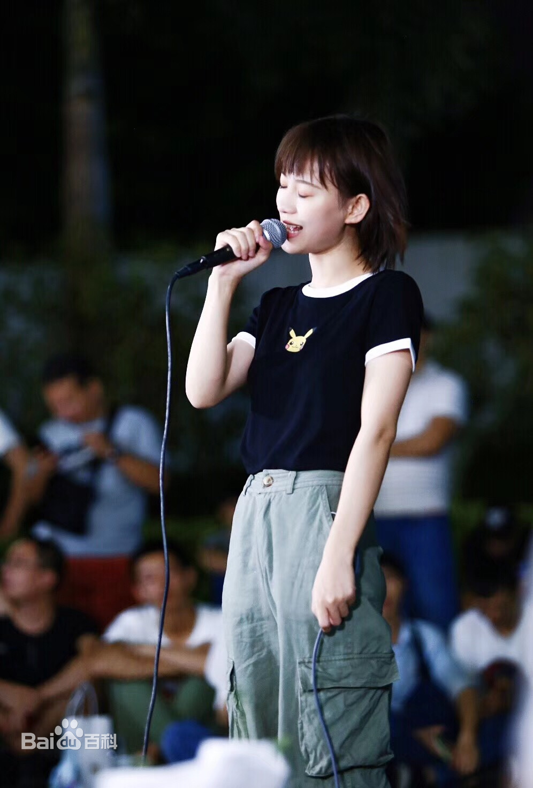

中国内地女歌手，YY直播的主播
 小阿七，女，中国国籍，汉族，1996年出生于重庆，中国内地女歌手，YY直播金牌艺人;
2019年9月，小阿七首支原唱歌曲《浪》上线。2019年10月，在广州街头演唱凭借一首《那女孩对我说》走红，一夜之间收获大量的人气，成功收获1000万粉丝。
2018年底，为了自己的音乐梦想，小阿七只身一人来到广州，自己每周拿着音响流落在广州不同的街头，下雨的时候还会在地下通道。每周五晚，小阿七都会在广州新港东路的保利广场唱歌，据很多附近居民反馈，听她唱歌已经成为了一种习惯。每次连续唱歌几个小时的小阿七，累了就会坐下唱，席地而坐唱歌的姿势也顺势成了小阿七的一个特点。
2019年9月，小阿七第一首原唱的歌曲《浪》成功上线，并获得广大粉丝好评。
2019年10月，小阿七坐在地上红着眼眶唱《那女孩对我说》的视频爆红网络，感动唱哭了超300万网友，在不到一天这个视频播放量就超过了6000万，分享超过10万次，更是一举登上了“抖音热门音乐排行榜”的榜首。
2021年1月，参加2021年北京台春晚联排.
2022年2月1日，参加《2022龙腾虎跃大湾区广东卫视春节晚会》，表演歌曲《让我们荡起双桨》；9月9日，参加元宇宙综艺竞演歌会《超能音乐汇》；9月10日，参加《明月知我——闽江之心中秋电影云歌会》，与戴羽彤、吴岱林演唱歌曲《美丽中国》。
2023年1月15日，参加河南卫视《奇遇新年夜》，演唱《从前说》。
听过她歌声的人，有人评价她的声音有故事，唱出了女人的心酸；有人说她像童话里的女孩子，歌声治愈；也有人说她的歌声励志，能带给人勇气和力量。慢慢地，“治愈”、“励志”、“正能量”、“有拼劲儿”逐渐成了小阿七从歌声中传递出来的能量。
与大多数视频的伤感形象相比，现实中的小阿七性格活泼开朗，是一个典型的重庆妹子。